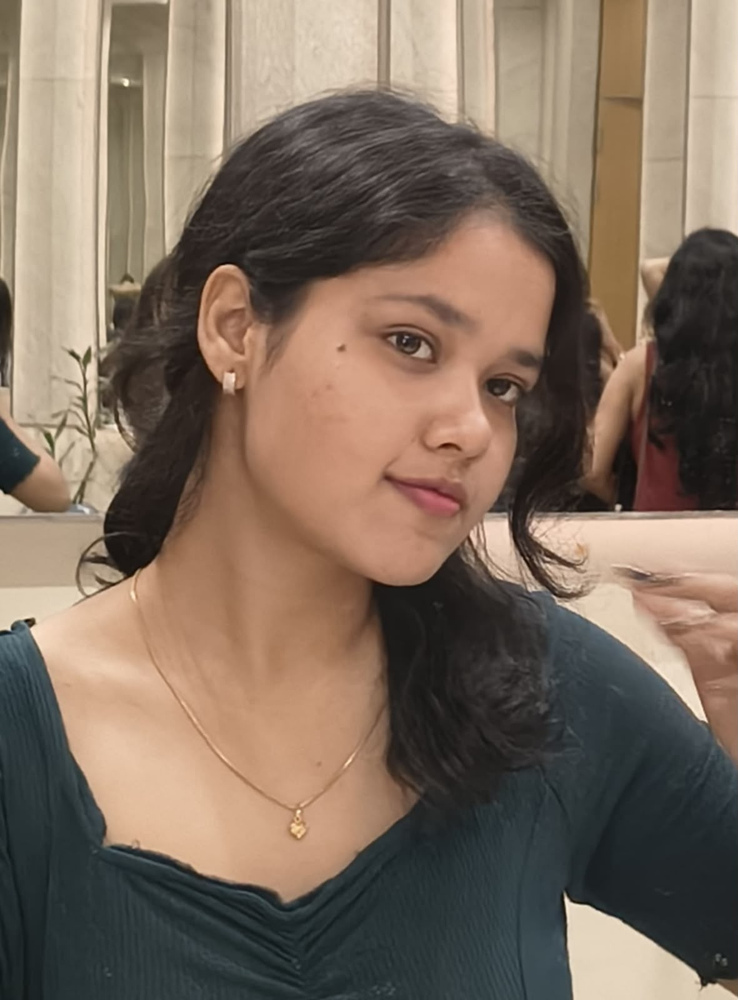

Hello, I'm
I am an aspiring software developer passionate about problem solving, technology, artificial intelligence and building useful digital solutions.

I am a second-year B.Tech Computer Science Engineering student at the Institute of Technical Education and Research (ITER), Bhubaneswar.
I am passionate about software development, problem solving, artificial intelligence and technology. I am currently strengthening my programming and computer science fundamentals while working towards building meaningful projects.
I enjoy learning new technologies, improving my problem-solving skills and continuously developing myself for future opportunities in the technology industry.
Technologies and skills I am learning and developing.
Java
Python
HTML
CSS
SQL
Data Structures & Algorithms
Problem Solving
Artificial Intelligence
Machine Learning
Institute of Technical Education and Research (ITER)
Bhubaneswar, Odisha (751030)
BATCH : 2025 - 2029
First-Year SGPA: 9.62 | First sem: CGPA-9.26 | Second sem: CGPA-9.45
Here are some of the projects I have worked on and will continue to build as I develop my skills.
A responsive personal portfolio website built to showcase my skills, education, projects and achievements.
HTML • CSS • GitHub Pages
GitHubI am currently working on new projects to strengthen my programming, problem-solving and software development skills.
Java • Python • SQL
New projects will be added here as I continue learning and exploring different areas of computer science.
Secured a 9.62 SGPA in the first year of B.Tech Computer Science Engineering.
Selected as the Head Girl of my school, taking on leadership responsibilities and representing the student community.
Actively participated in various debates and Model United Nations (MUNs), winning multiple prizes and developing strong communication, public speaking and leadership skills.
Selected by the school committee to represent my school at the First Inter-DPS Science and Commerce Meet, competing at the inter-school level.
Was elected as the sports captain for the school team. Actively involved in sports and dance, along with extracurricular activities such as acting and drawing. These experiences have helped me develop creativity, teamwork, discipline and confidence.
Interested in learning more about my academic journey, skills, achievements and experience?
Download or view my resume to learn more about my academic background, technical skills and achievements.
View Resume Download ResumeI'm always open to learning, collaboration and new opportunities.
Email: saisalonid@gmail.com
GitHub: github.com/saisalonid